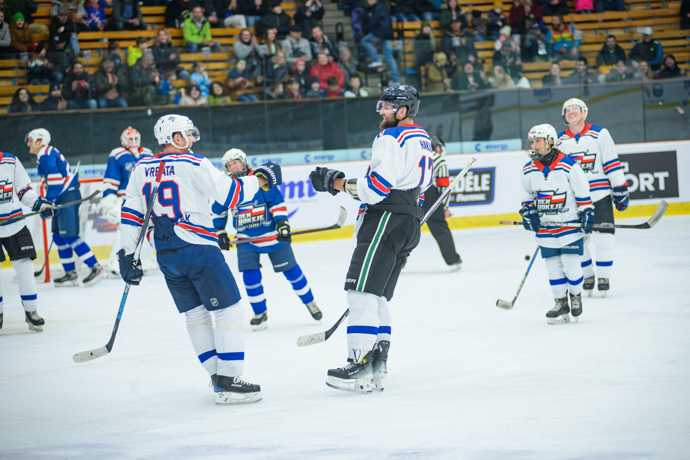
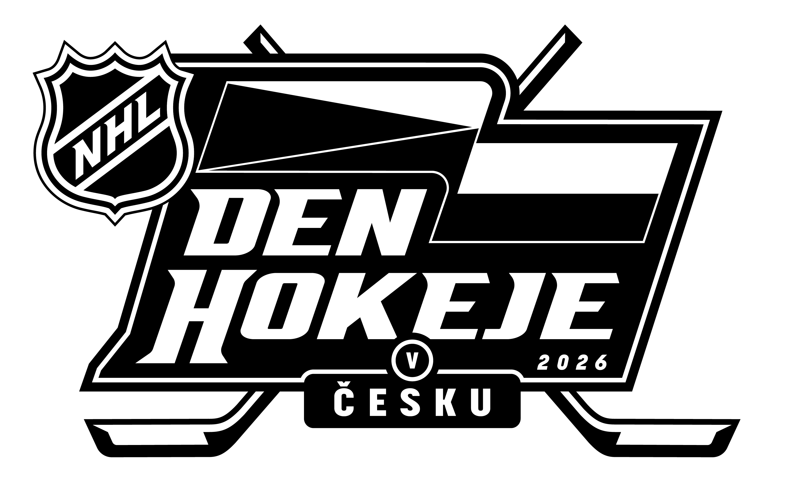
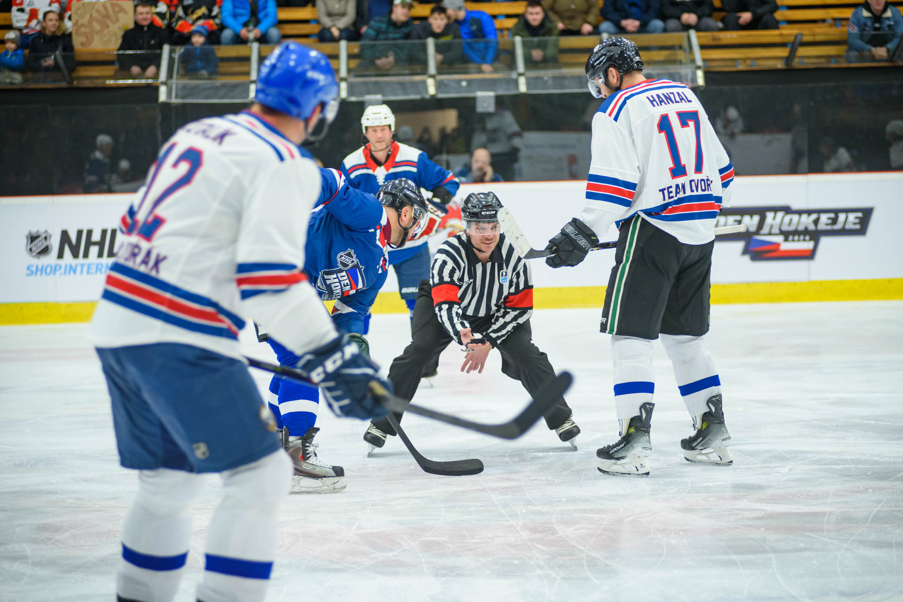

01 / ENTERIA ARENALEGENDY.
↗LEGENDY.
ZNOVU VE HŘE.
Exhibiční utkání Dynamo legendy vs. NHL legendy.

Ohlédnutí za akcí ↗
NHL zblízka. Legendy na ledě. Fanoušci spolu.
Dva dny, které patřily hokeji.
Na ledě soupeři.
Mimo něj jedna hokejová rodina.
NHL Den hokeje propojuje svět nejlepší hokejové ligy s českými fanoušky. V roce 2026 se jeho domovem staly Pardubice. Od Pernštýnského náměstí až po enteria arenu.
Podívat se, co se dělo ↗Od prvního setkání po poslední sirénu.
Program ročníku Pardubice 2026.
Program převzatý z oficiálního webu ročníku 2026. Akce již proběhla.
Malé momenty. Velké vzpomínky.
Podívej se na předchozí ročníky.
Hokejová akce, která přináší atmosféru NHL do českých měst. Spojuje fanouškovský program, setkání s legendami a zážitky na ledě i mimo něj.
V pátek 6. a v sobotu 7. března 2026 na Pernštýnském náměstí a v enteria areně. Podrobný program najdeš výše.
Aktuální oznámení sleduj na oficiálním webu NHL Dne hokeje ↗. Termín dalšího ročníku v tomto návrhu zatím neuvádíme.
RŮZNÉ DRESY. STEJNÁ VÁŠEŇ.